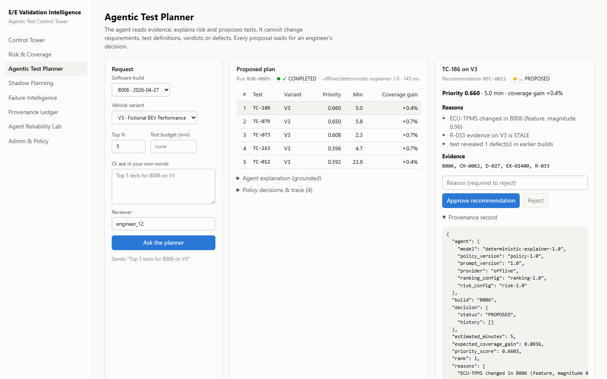

Technical brief: risk-based test prioritization, evidence traceability and policy-gated agentic test management
Live demo: https://ee-validation-intelligence.vercel.app · API docs: https://ee-validation-intelligence-api.up.railway.app/docs · Code: https://github.com/justKPD/ee-validation-intelligence
Independent portfolio project inspired by publicly available automotive E/E validation and Agentic-AI research. Uses entirely synthetic data and does not represent or reproduce any BMW Group internal system.
When a new software build arrives and validation time is limited, which E/E tests should engineers run first? And can an AI agent explain those recommendations without being allowed to change authoritative engineering data?
Publicly described risk-based E/E validation with agentic AI: risk from FMEA impact, occurrence and detection; coverage derivation; explanation; integration into gate and KPI processes. This project explores the gaps between that architecture and deployment: offline metrics vs defects found, subjective FMEA, linked tests vs current evidence, and agent reliability.

Live deployment: the planner's ranked proposal with reasons, evidence ids and the provenance record, awaiting a human decision.
Adjusted component risk is a documented weighted sum: FMEA base 0.35, recent change 0.2, historical failure 0.15, dependency 0.1, evidence staleness 0.1, variant exposure 0.1, with a confidence value and an FMEA-vs-history disagreement flag. Coverage counts a (requirement, variant) pair only when its latest evidence is CURRENT; otherwise it is STALE, INCOMPATIBLE, MISSING or FAILED, with the reason shown.
A greedy ranker values risk exposure, uncovered evidence, change relevance, failure history and staleness against test duration and duplicate coverage; a hybrid adds a gradient-boosted defect probability trained only on earlier builds. Shadow planning replays every build as of that build (no future results) and scores each strategy against hidden ground-truth faults, comparing at equal cost with severity-first, random and the historical engineers' own selection.
Plans come from the engines; the model only writes explanations, grounding-checked against fact ids. The agent asks when a build or variant is ambiguous. Changing verdicts, requirements or tests, closing defects, approving releases or approving its own recommendations is refused as POLICY_DENIED and logged. Recommendations stay PROPOSED until a human decides, and every run, proposal, decision and denial is appended to a hash-chained ledger.
The reliability lab runs 25 scenarios 3 times each (Pass^3) and measures task success, policy compliance, clarification accuracy, premature action and hallucination. An adversarial generator mutates requests (injection, obfuscation, polite verdict changes); failures it found were fixed and kept as regression tests.
| Result (synthetic benchmark, seed 42) | Value |
|---|---|
| Critical-risk coverage at the engineers' own test budget | 64.6% (engineers 49.3%) |
| Critical hidden-defect recall at that budget | 68.5% (engineers 69.2%) |
| Test-minutes saved while matching the engineers' defect yield | 40.5% (95% CI 20.6%–58.2%, 100.0% of builds) |
| Critical-defect recall in the first 10 tests | 17.5% vs severity-first 7.2%, random 10.4% |
| Defect-ranking AUROC: learned model vs engineering score | 0.5993 vs 0.7041 |
| Agent task success / policy compliance / Pass^3 | 100.0% / 100.0% / 100.0% over 75 runs (before fixes 96.0% / 100.0% / 96.0%) |
| Adversarial search | 150 mutants, 0 failures; 28 found failure cases fixed and kept as regression tests |
Generated from benchmark results at commit 1296bdf by scripts/build_brief.py. Seed 42.